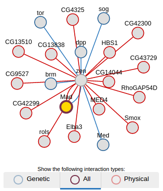

Supplementary data sources
Based on your uploaded data, the following supplementary data sources might be useful:
Data tools
We've added the following tools to your InterMine automatically:
-
Cytoscape
Gene & protein network interaction visualiser
 -
ProtVista
Protein feature browser

-
GXA Expression viewer
Visualise gene expression in a heatmap